중국 음식 소개

중화요리:: 대표적인 양장피
양장피 만들기
다들 어렵게 생각하시는데, 집에서도 쉽게 만들 수 있습니다. 딱 3만원이면 손님대접 요리에도 손색없는 알록달록 양장피 완성
조리법
양장피 재료 목록
주재료
| 재료명 | 수량 |
|---|---|
| 양장피 | 1봉지 |
| 새우 중간크기 | 30마리 |
| 오징어 | 2마리 |
| 돼지고기 잡채용 | 300g |
| 당근 | 1/2개 |
| 파프리카 | 1개 |
| 피망 | 1개 |
| 달걀 | 2개 |
| 양파 | 1개 |
| 오이 | 1개 |
| 표고버섯 | 4개 |
| 게맛살 | 1봉지 |
| 생 목이버섯 | 1주먹 |
| 마늘 | 10개 |
부재료
| 재료명 | 수량 |
|---|---|
| 겨자분 | 3T |
| 설탕 | 2T |
| 소금 | 3T |
| 후추 | 3T |
| 간장 | 4T |
| 참기름 | 1T |
| 식초 | 2T |
양장피 조리 순서
1
양장피(채)를 찬물에 1시간 정도 불려준다.
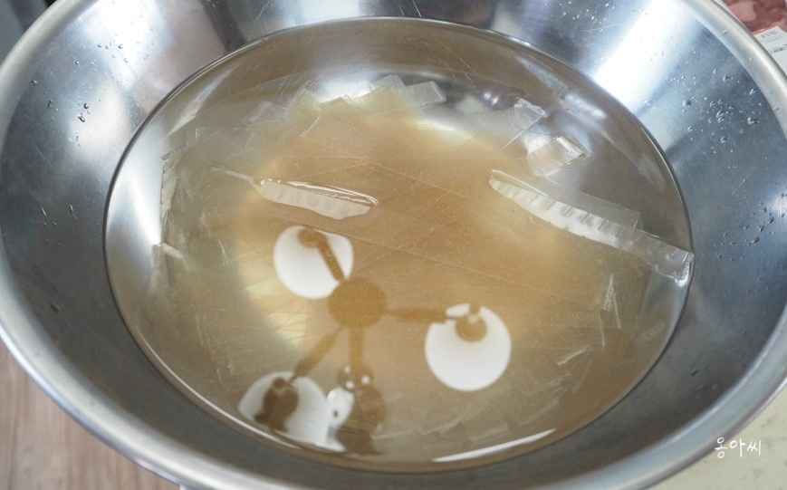
2
소스 만들기: 겨자분 3스푼, 설탕 2스푼을 뜨거운 물로
개준다.
마늘 10알을 다져서 섞고 숙성 후, 양장피 위에 뿌리기 전 식초로 간을 맞춘다.
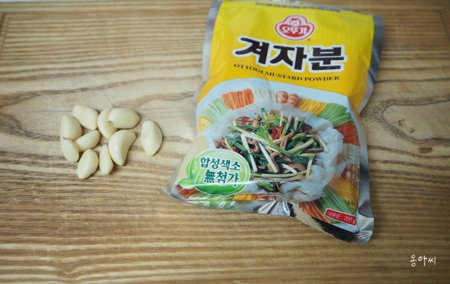
마늘 10알을 다져서 섞고 숙성 후, 양장피 위에 뿌리기 전 식초로 간을 맞춘다.
3
오징어는 내장과 다리를 분리하고 껍질을 벗겨준다.
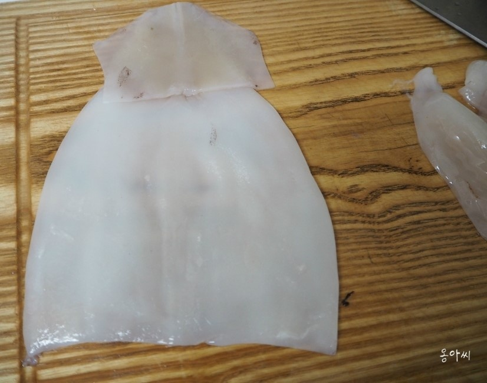
4
오징어에 격자무늬 칼집을 넣고, 손가락보다 얇게 채 썬다.
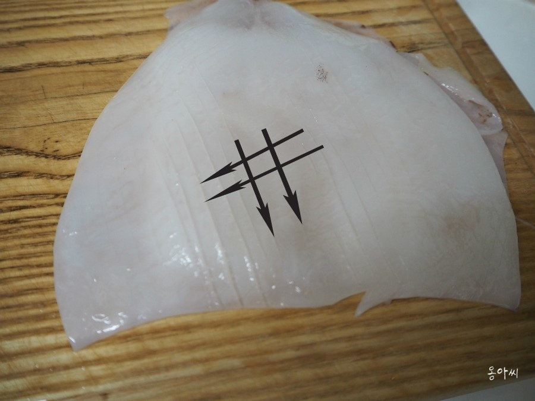
5
새우 머리, 꼬리, 껍질, 내장을 깨끗이 손질한다.
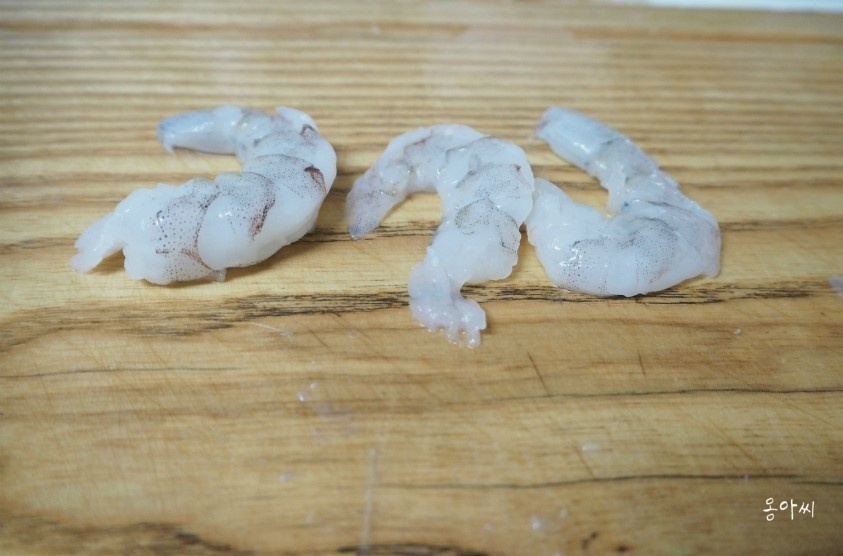
6
오징어, 새우를 끓는 물에 살짝 데친 후 얼음물에 담근다.
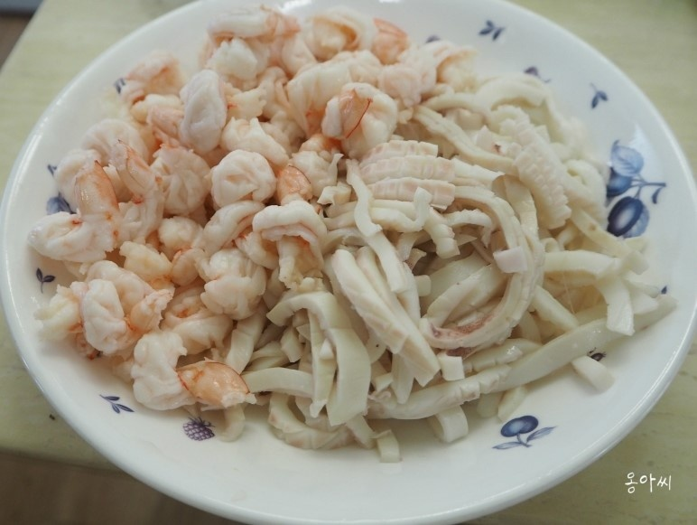
7
달걀은 노른자와 흰자를 분리한 후 지단을 부친다.
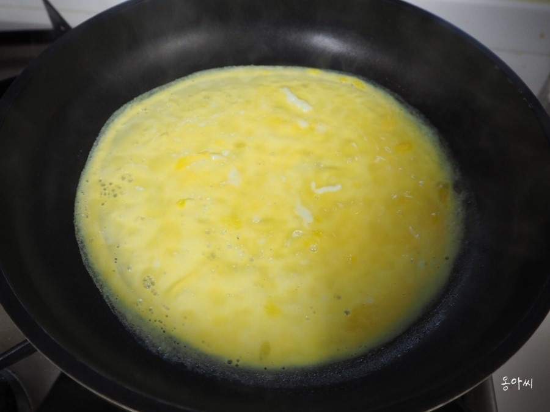
8
지단을 채 썰고, 크래미는 손으로 찢어둔다.
표고버섯을 채 썰어 간장, 소금, 후추와 함께 볶는다.
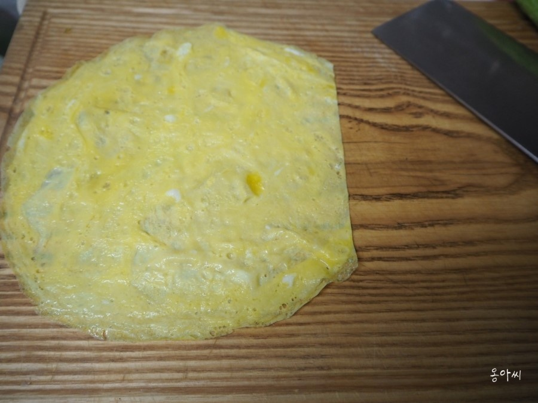
표고버섯을 채 썰어 간장, 소금, 후추와 함께 볶는다.
9
당근, 피망, 파프리카, 오이, 양파를 먹기 좋게 채 썬다.
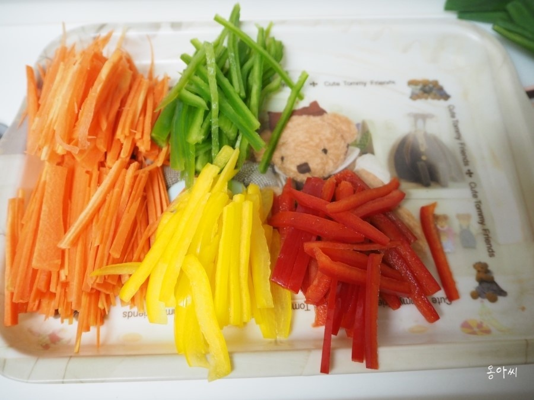
10
불린 양장피를 끓는 물에 2~3분 삶은 후 찬물에 씻어내고 참기름과
간장으로 무친다.
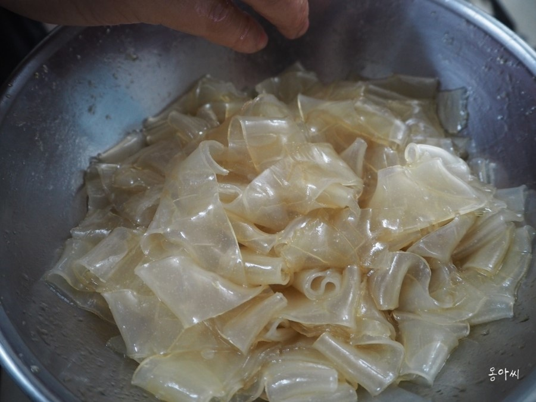
11
팬에 기름을 두르고 돼지고기를 볶고, 목이버섯과 쪽파를 넣어 함께
볶아준다.
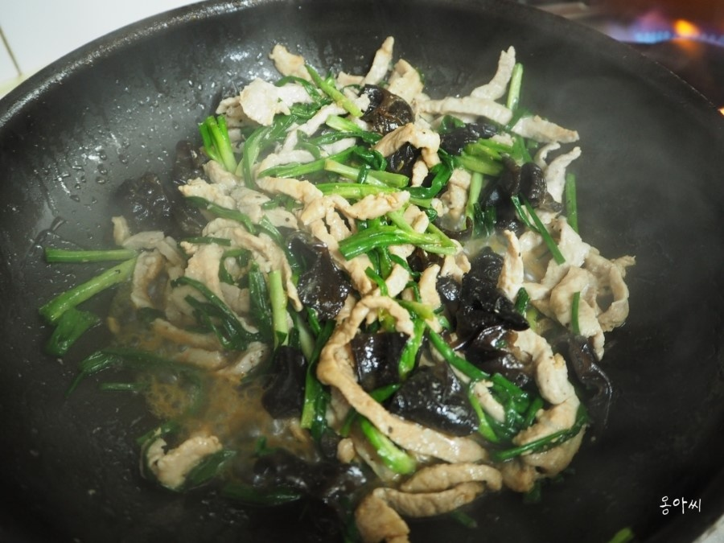
12
넓은 접시에 모든 재료를 보기 좋게 정리해서 올린다.
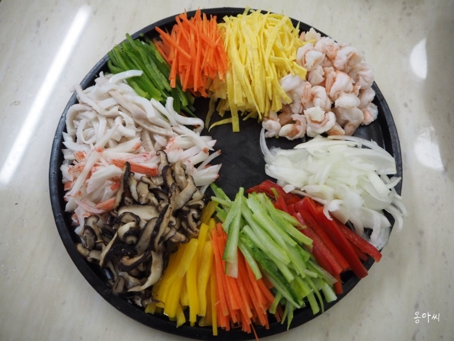
13
중앙 부분에 무쳐진 양장피를 올린다.
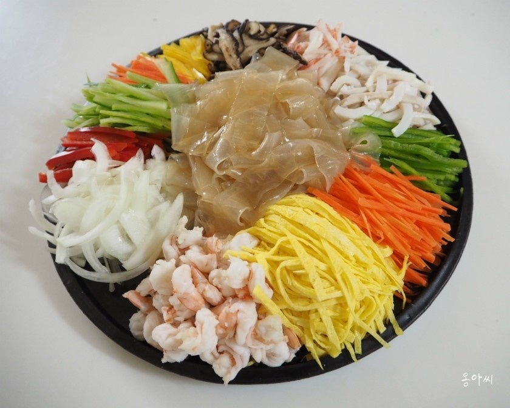
14
마지막으로 볶은 돼지고기를 올리면 완성!
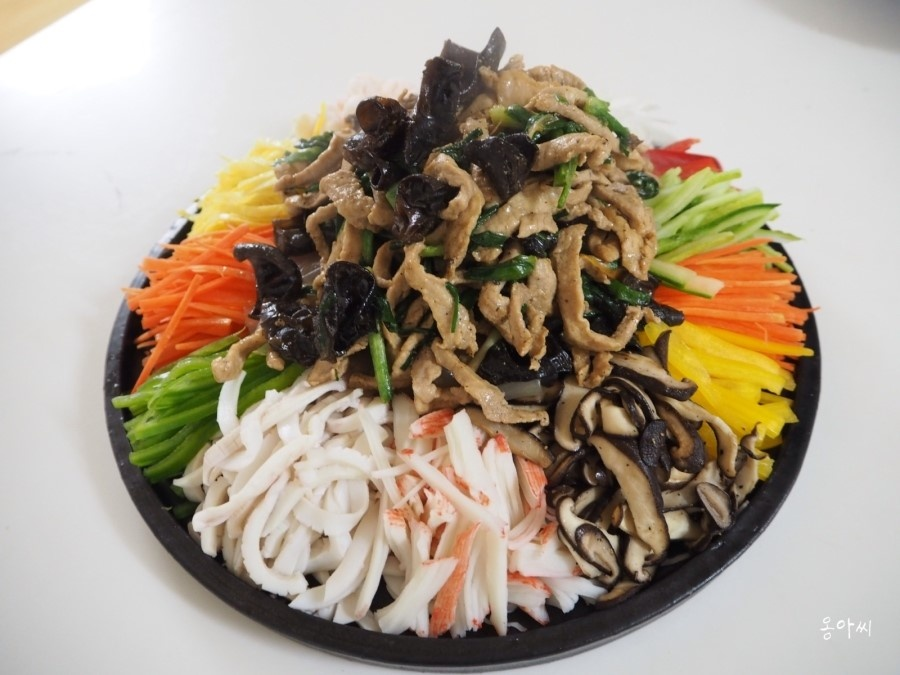